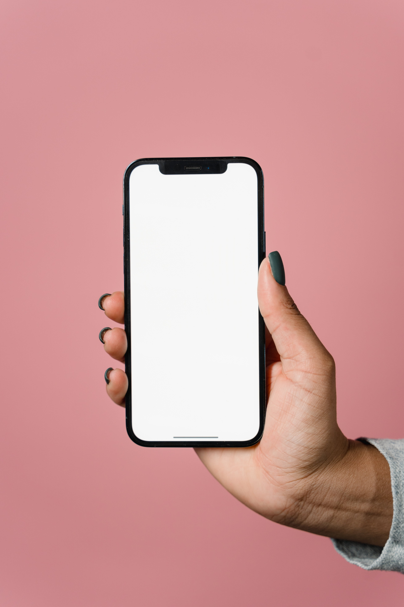
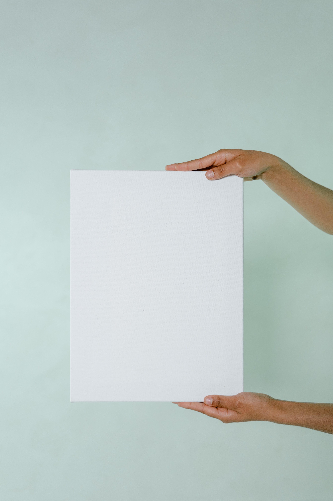

Featured Projects
Project Name
Summary or description of the project and/or your role in it. Add as many paragraphs as you need.
View project / case studyProject Name
Summary or description of the project and/or your role in it. Add as many paragraphs as you need.
View project / case studyProject Name
Summary or description of the project and/or your role in it. Add as many paragraphs as you need.
View project / case studyWork Experience
Graphic Designer and Creative
Janna Creative
Jan 2023 - Current
- Engaged in discussions with clients to understand project requirements, incorporating feedback to guarantee client satisfaction.
- Delivered top-tier creative output across various domains, including photography, layout design, branding, and social media graphics.
- Managed social media platforms and implemented word-of-mouth advertising strategies.
- Demonstrated proficiency in Adobe Creative Suite and applied solid design principles to consistently produce high-quality work.
Administrative Assistant
Bodylase Medspa
Jan 2020 - Aug 2021
- Assisted Marketing Specialist in taking photos and creating marketing materials for in-spa as well as social media
- Tracked company goals and communicated with my team on how to surpass our goals
- Operated high volume phone calls, scheduling patients accordingly in a fast-paced environment
- Meticulously handle POS system transactions including credit, cash, exchanges, and returns to ensure seamless and accurate cash flow and successfully handle thousands of dollars in cash and card sales in one shift by processing complicated orders
Education
Wake Technical Commmunity College - Raleigh
AAS in Advertising & Graphic Design | May 2024
As I pursued my education at Wake Tech, I was able to keep a consistent 4.0 GPA, as well as earned myself a spot on the Presidents list. I gained 5 certificates in my program of study, as well as finally achieved my Associates Degree. Through my education, I learned Graphic Design skills that will take me into the industry. These skills include but are not limited to typography, color theory, hierarchy and more.